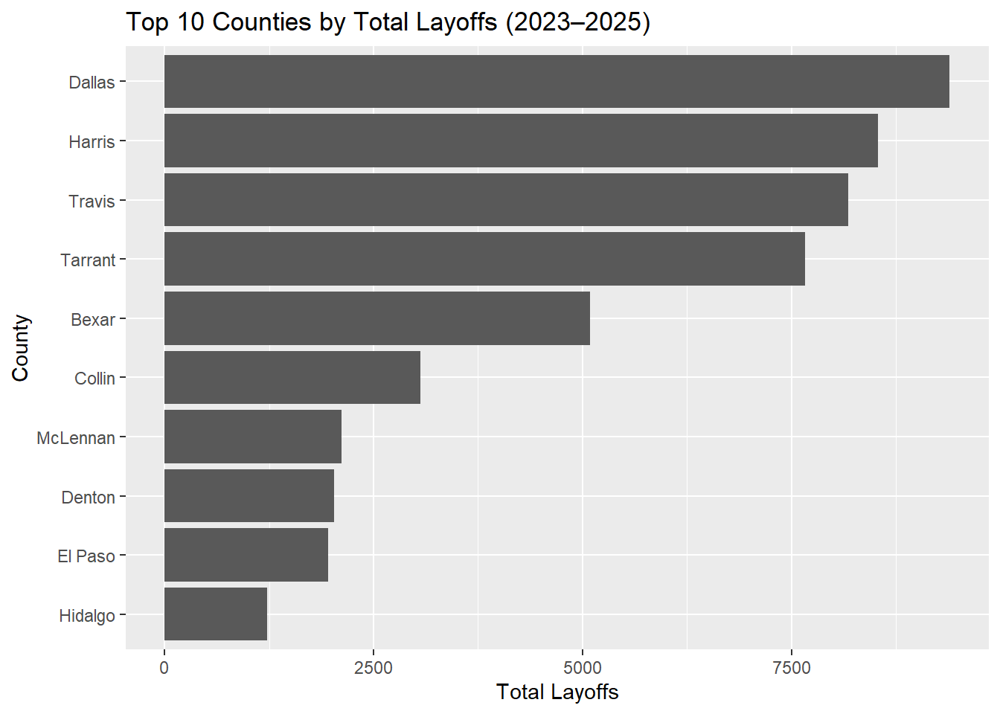
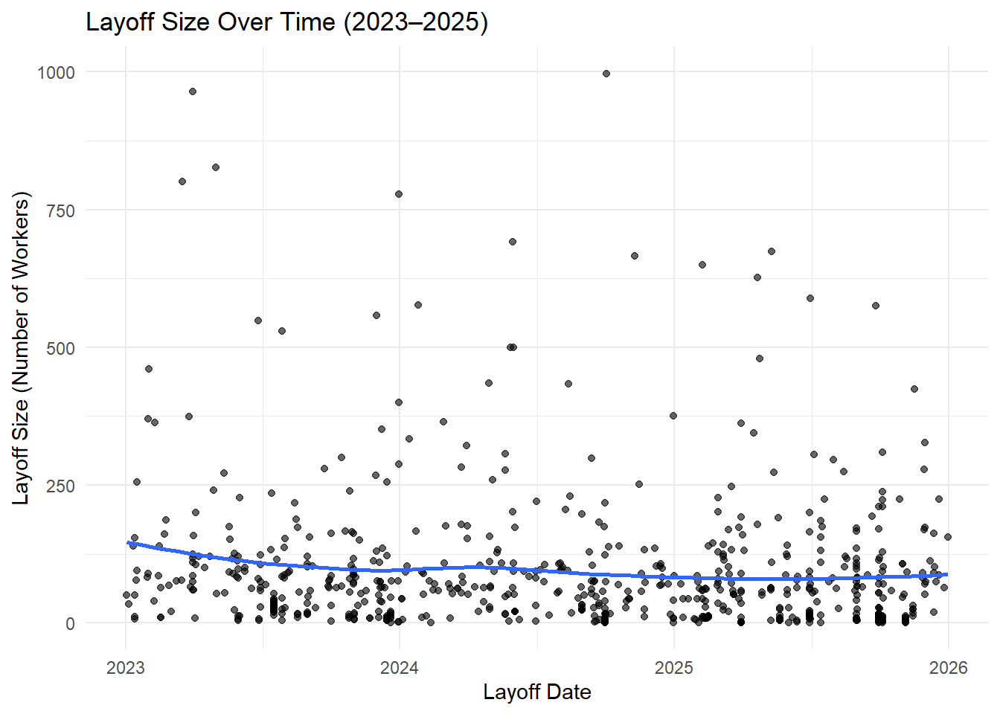

Open Data Network Business Intelligence Report
Data-Driven Management Analysis
Daxson Storey, 655373652
Nate Dicker, 667248538
2025-12-05
Section 1: Business Problem Definition and Context
A staffing agency is planning to expand its operations to Texas and must identify the industries and counties that have demonstrated the largest number of layoffs. Using the Texas Worker Adjustment and Retraining Notification (WARN) data from recent years (2023–2025), the agency will determine the industries and counties where the majority of workers have been laid off.
Section 2: Data Source Assessment
A. Data Source Documentation
The data used is this analysis is sourced from the government of Texas Workforce commission and can be accessed from the following link. This data is originally a collection of all WARN act notices in Texas. The official description of th WARN act is quote “The WARN Act is intended to offer protection to workers, their families and communities” (para. 1). In other words, the WARN act provides protection by legally requiring employers to supply a 60 day notice of layoffs. Furthermore, this data covers 2019 to 2025, and although the update frequency is not explicitly stated, the sourced data set is current of this analysis (2025-11-25), which suggests it is updated as new WARN reports are submitted. Lastly, this data is limited to larger firms as the WARN act applies only to business with 100+ employees.
B. Access Method Implementation
# Load the CSV file
business_data <- read.csv("data/WorkerAdjustment.csv")Data Import Method
The data is accessed through a locally imported CSV file.
C. Data Quality Assessment
dim(business_data) # Verify rows > 500 and columns >= 5## [1] 2270 8Amount Of Data
The data contains 2270 rows and a 8 Columns.
# This exists to change the date values and the lay off numbers to numeric, and to further change the date values to the specific m/d/y format to allow for relevant (2023-2025) date filters later on.
business_data$TOTAL_LAYOFF_NUMBER <- as.numeric(business_data$TOTAL_LAYOFF_NUMBER)## Warning: NAs introduced by coercionbusiness_data$NOTICE_DATE <- as.Date(business_data$NOTICE_DATE, format = "%m/%d/%Y")
business_data$LayOff_Date <- as.Date(business_data$LayOff_Date, format = "%m/%d/%Y")
business_data$WFDD_RECEIVED_DATE <- as.Date(business_data$WFDD_RECEIVED_DATE, format = "%m/%d/%Y")
library(ggplot2)
library(dplyr)## Warning: package 'dplyr' was built under R version 4.5.2##
## Attaching package: 'dplyr'## The following objects are masked from 'package:stats':
##
## filter, lag## The following objects are masked from 'package:base':
##
## intersect, setdiff, setequal, unionfiltered_data <- business_data %>%
filter(LayOff_Date >= as.Date("2023-01-01") &
LayOff_Date <= as.Date("2025-12-31"))Data Cleaning
This helps to clean the data by changing the appropriate categorical information to numerical and it filters out irreverent dates that are before 2023.
str(business_data) ## 'data.frame': 2270 obs. of 8 variables:
## $ NOTICE_DATE : Date, format: "2022-01-28" "2022-01-06" ...
## $ JOB_SITE_NAME : chr "Amentum" "Stearns Lending, LLC - Corporate Dr." "Monitronics International, Inc. dba Brinks Home" "Central Freight Lines - San Antonio" ...
## $ COUNTY_NAME : chr "Bowie" "Denton" "Dallas" "Bexar" ...
## $ WDA_NAME : chr "North East Texas WDA" "North Central Texas WDA" "Dallas County WDA" "Alamo WDA" ...
## $ TOTAL_LAYOFF_NUMBER: num 178 348 42 66 153 162 292 145 168 6 ...
## $ LayOff_Date : Date, format: "2022-03-27" "2022-03-13" ...
## $ WFDD_RECEIVED_DATE : Date, format: "2022-01-28" "2022-01-06" ...
## $ CITY_NAME : chr "New Boston" "Lewisville" "Dallas" "San Antonio" ...Categorical and Numerical Values
The data contains a total of four categorical variables:
- Job Site Name
- County Name
- WDA Name
- City Name
and two relevant numerical variables:
- Total Layoffs
- Lay Off Date
colSums(is.na(business_data))## NOTICE_DATE JOB_SITE_NAME COUNTY_NAME WDA_NAME
## 0 0 0 0
## TOTAL_LAYOFF_NUMBER LayOff_Date WFDD_RECEIVED_DATE CITY_NAME
## 13 7 0 0(colSums(is.na(business_data)) / nrow(business_data)) * 100## NOTICE_DATE JOB_SITE_NAME COUNTY_NAME WDA_NAME
## 0.0000000 0.0000000 0.0000000 0.0000000
## TOTAL_LAYOFF_NUMBER LayOff_Date WFDD_RECEIVED_DATE CITY_NAME
## 0.5726872 0.3083700 0.0000000 0.0000000sapply(business_data, function(x) length(unique(x)))## NOTICE_DATE JOB_SITE_NAME COUNTY_NAME WDA_NAME
## 669 2182 131 30
## TOTAL_LAYOFF_NUMBER LayOff_Date WFDD_RECEIVED_DATE CITY_NAME
## 339 696 644 296Missing Values
The Missing Values is minimal with the following (rounded to two decimal places):
- Total Lay Off: 0.57%
- Lay Off Date: 0.31%
Unique Values
There is also a significant amount of unique values in expected categories such as:
- Job Site Name: 2182
- Lay Off Date: 696
- Notice Date: 669
These unique values are expected due to the randomness that occurs with each WARN entry, specifically the many different firms, locations and dates in which they occurred.
Data Quality Summary
This data is reliable as the minimal missing values of Total Lay Off is at 0.57% and Lay Off Date is at 0.31% which amounts to only 0.88%; the data is also sourced from the government of Texas which indicates reliability. Furthermore, the data has been further cleaned to change the appropriate values to a numeric identification and to filter out the dates we decided are irreverent to decision making (Before 2023).Lastly, This data supports the decision of choosing an industry and location that have seen the most amount of layoffs in recent years.
Section 3: Comprehensive Data Analysis
A. Descriptive Analytics:
1
county_totals <- aggregate(
filtered_data$TOTAL_LAYOFF_NUMBER,
by = list(County = filtered_data$COUNTY_NAME),
FUN = sum,
na.rm = TRUE
)
county_totals## County x
## 1 Anderson 87
## 2 Angelina 101
## 3 Archer 125
## 4 Atascosa 1
## 5 Bastrop 99
## 6 Bell 270
## 7 Bexar 5088
## 8 Blanco 1
## 9 Bowie 130
## 10 Brazoria 29
## 11 Brazos 64
## 12 Brown 93
## 13 Burnet 21
## 14 Caldwell 138
## 15 Cameron 1055
## 16 Chambers 28
## 17 Collin 3063
## 18 Comal 59
## 19 Cooke 7
## 20 Dallas 9392
## 21 Denton 2028
## 22 Dewitt 140
## 23 Ector 78
## 24 El Paso 1953
## 25 Erath 87
## 26 Fayette 65
## 27 Fort Bend 827
## 28 Freestone 77
## 29 Frio 635
## 30 Galveston 83
## 31 Garza 218
## 32 Gray 7
## 33 Grayson 126
## 34 Gregg 645
## 35 Hardeman 158
## 36 Harris 8538
## 37 Harrison 298
## 38 Hays 448
## 39 Henderson 80
## 40 Hidalgo 1227
## 41 Hill 126
## 42 Hunt 159
## 43 Jack 117
## 44 Jefferson 687
## 45 Johnson 299
## 46 Kaufman 208
## 47 Kleberg 95
## 48 Lamar 211
## 49 Lee 3
## 50 Leon 27
## 51 Liberty 115
## 52 Llano 1
## 53 Lubbock 440
## 54 Marion 76
## 55 Matagorda 173
## 56 Maverick 189
## 57 McLennan 2116
## 58 Midland 408
## 59 Montague 15
## 60 Montgomery 87
## 61 Moore 113
## 62 Nacogdoches 96
## 63 Navarro 168
## 64 Nueces 266
## 65 Orange 487
## 66 Parker 16
## 67 Parmer 103
## 68 Potter 661
## 69 Reagan 5
## 70 Robertson 15
## 71 Rockwall 447
## 72 Rusk 281
## 73 Shelby 144
## 74 Smith 277
## 75 Somervell 86
## 76 Tarrant 7659
## 77 Taylor 28
## 78 Titus 10
## 79 Tom Green 109
## 80 Travis 8179
## 81 Val Verde 36
## 82 Ward 27
## 83 Washington 133
## 84 Webb 366
## 85 Wharton 94
## 86 Wichita 18
## 87 Willacy 590
## 88 Williamson 1106
## 89 Winkler 98
## 90 Wise 109Total Lay Offs Per County
This function allows us to view the total layoffs in each county. This can be used to identity which numbers that are large and stand out so we can further analyze.
2
avg_layoff_notice <- filtered_data %>%
summarise(average_notice_size = mean(TOTAL_LAYOFF_NUMBER, na.rm = TRUE))
avg_layoff_notice## average_notice_size
## 1 92.77253Average Lay Off notice
This Function allows us to view the average scale of a layoff event in taxes.
3
Aggregate Summary
Together, these summaries highlight where layoffs are concentrated and how large they tend to be, which are key metrics for our staffing agency to consider.
B. Professional Visual Analytics
1
library(ggplot2)
library(dplyr)
layoffs_by_county <- filtered_data %>%
group_by(COUNTY_NAME) %>%
summarise(total_layoffs = sum(TOTAL_LAYOFF_NUMBER, na.rm = TRUE)) %>%
arrange(desc(total_layoffs)) %>%
slice(1:10)
ggplot(layoffs_by_county, aes(x = reorder(COUNTY_NAME, total_layoffs),
y = total_layoffs)) +
geom_bar(stat = "identity") +
coord_flip() +
labs(title = "Top 10 Counties by Total Layoffs (2023–2025)",
x = "County",
y = "Total Layoffs")
Highest Layoffs
This visualization allows us to see counties rated by their highest amount of layoffs in recent years.
2
library(ggplot2)
library(dplyr)
avg_layoff_per_site <- filtered_data %>%
group_by(JOB_SITE_NAME) %>%
summarise(avg_layoff = mean(TOTAL_LAYOFF_NUMBER, na.rm = TRUE)) %>%
arrange(desc(avg_layoff)) %>%
slice(1:10)
ggplot(avg_layoff_per_site, aes(x = reorder(JOB_SITE_NAME, avg_layoff),
y = avg_layoff)) +
geom_bar(stat = "identity") +
coord_flip() +
labs(title = "Top 10 Employers by Avg Layoff Size (2023–2025)",
x = "Employer (Job Site Name)",
y = "Average Layoff Size")
Average Layoff Size For Employers
This visualization allows us to see the firms with the highest average layoff size.
3
ggplot(filtered_data, aes(x = LayOff_Date, y = TOTAL_LAYOFF_NUMBER)) +
geom_point(alpha = 0.6) +
geom_smooth(method = "loess", se = FALSE) +
labs(title = "Layoff Size Over Time (2023–2025)",
x = "Layoff Date",
y = "Layoff Size (Number of Workers)") +
theme_minimal()## `geom_smooth()` using formula = 'y ~ x'## Warning: Removed 5 rows containing non-finite outside the scale range
## (`stat_smooth()`).## Warning: Removed 5 rows containing missing values or values outside the scale
## range (`geom_point()`).
Lay Off Trends
This scatter plot shows how layoff sizes vary across time from 2023–2025.
C. Professional Visual Analytics
The data visualization indicates three distinct insights. First there is a time trend with layoff size peaking in 2023 and tapering off towards 2025 but the key is that is remained relatively constant. The other insight is the top three highest employers layoff sizes are the following:
- Texas Children Hospital
- Gen Pact LLC
- South West General Hospital
This shows that two of the top three industries are health care related. Lastly, the counties with the highest layoffs are:
- Dallas
- Harris
- Travis
- Tarrant
This demonstrates that the layoffs by county is heavily correlated with population size.
Section 4: Strategic Recommendations
The staffing agency is recommended to expand to one of the highest cites by highest total layoffs with the following: Dallas, Harris, Travis and Tarrant demonstrating significantly more Layoffs then other counties. Furthermore, based on the lay off trend line there is distinct clustering which suggests that mass lay offs happen in waves rather isolated incidents. The staffing agency is recommended to identity some of the patterns of these occurrences in Texas. Then there is a trend in recent years with two of the top three industry lay offs being related to health care. This demonstrates a strong opportunity to temporarily focus on this industry to take advantage of its potential staffing demand. Overall, the staffing agency should chose a city out of the four listed above, identify economic patterns related to lay offs in Texas and temporary focus on taking advantage of the demand in the health care industry.